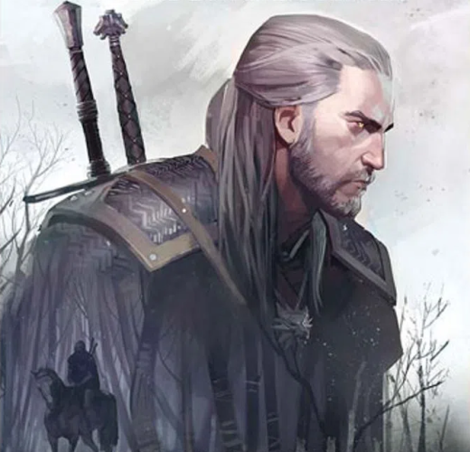
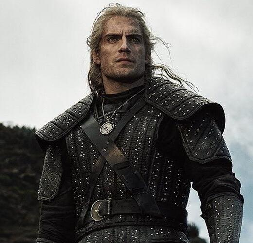
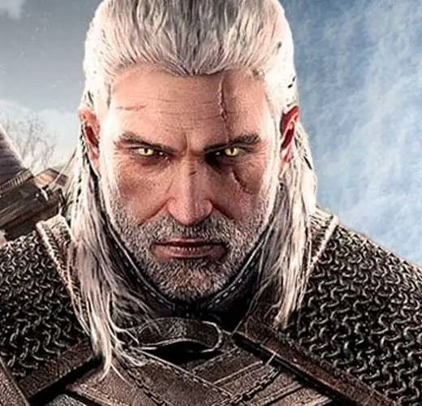
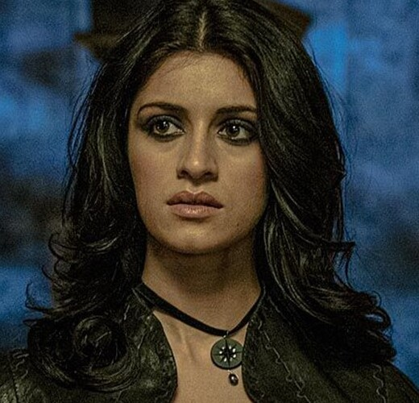
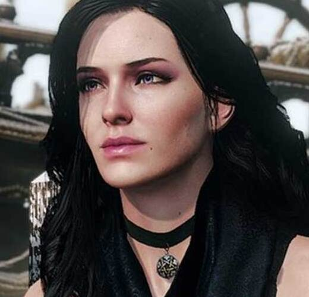
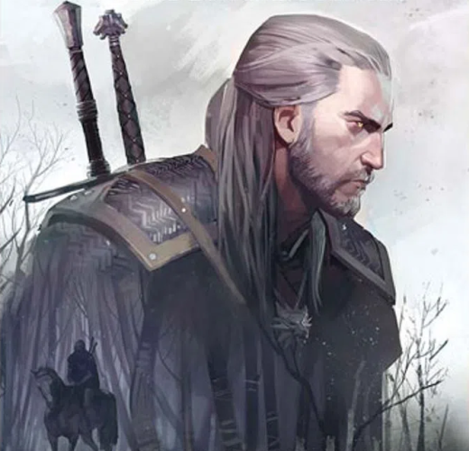
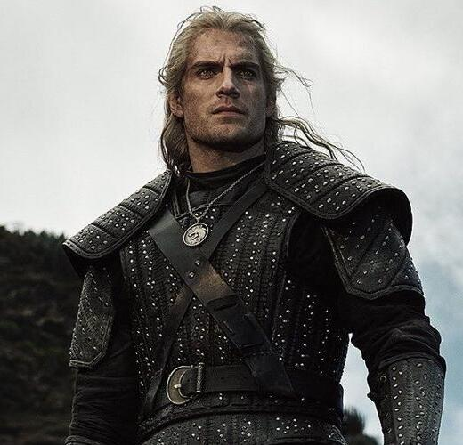
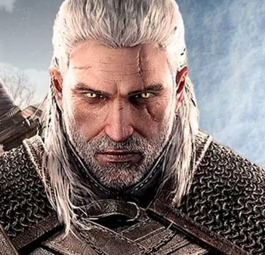
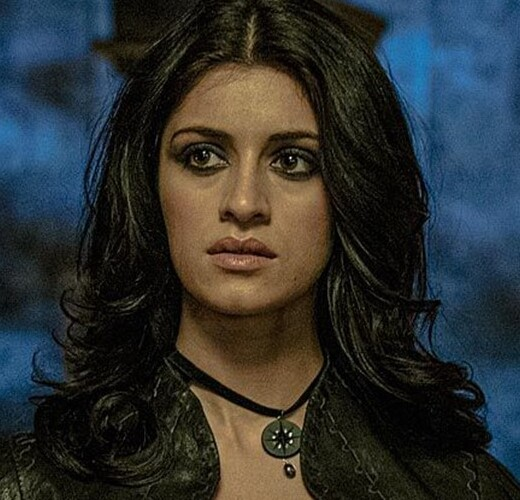
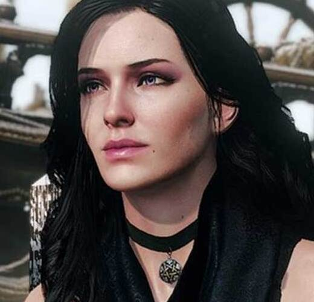

The Witcher Series
Veja1993
Polônia
The Witcher - O livro
é uma série literária de contos e romances de fantasia escritos pelo polonês Andrzej Sapkowski que seguem a história do mítico Geralt de Rívia, um dos últimos bruxos restantes na Terra.
Lançamento
A série de livros do Witcher se tornou extremamente popular na Polônia e ganhou reconhecimento internacional. Sapkowski criou um universo rico, cheio de personagens complexos, criaturas mágicas e um sistema político intrincado. Ele mistura elementos de folclore eslavo com uma abordagem única e moderna da fantasia.
Livros
O Último Desejo (The Last Wish)
- A introdução de Geralt e suas histórias iniciais.
A Espada do Destino (Sword of Destiny)
- Mais contos que continuam a desenvolver o personagem de Geralt.
O Sangue dos Elfos (Blood of Elves)
- Inicia a saga principal com uma narrativa mais contínua.
Tempo do Desprezo (Time of Contempt), Batismo de Fogo (Baptism of Fire) e A Torre da Andorinha (The Tower of the Swallow)
- Continuam a história principal de Geralt e Ciri.
A Senhora do Lago (The Lady of the Lake)
- Conclusão da história principal.
A Franquia The Witcher
A popularidade dos livros do Witcher cresceu ainda mais com a adaptação para outros formatos de mídia, como jogos de vídeo, quadrinhos e, mais recentemente, uma série de televisão na Netflix.
Personagens

Yennefer de Vengerberg
Yennefer é uma poderosa feiticeira, e parceira româmtica de Geralt, além de ser a figura materna de Ciri.
Ciri Gwent
Ela é uma princesa com sangue real, e a criança da profecia destinada a Geralt, ela está fadada a mudar o rumo do mundo.
Geralt De Rivia
Geralt De Rivia é um bruxo, um caçador de monstros geneticamente modificado, e treinado em Kaer Morhen.
Diferenças
Livro
Série
Jogo
Geralt de Rivia



Ciri

Yennefer


| Livro | Série | Jogo | |
|---|---|---|---|
| Geralt de Rivia |  |  |  |
| Ciri |
|
||
| Yennefer |  |  |

A série de The Witcher
A série estreiou em Dezembro de 2019, contando com três temporadas, seguindo rumo completamente diferente ao jogo, com uma temática diferente, já que os jogos se passam ao findar da era do bruxo.
Livro X Série X Jogo
Enquanto os jogos seguem a saga após os eventos dos livros, a série foca nos livros em si, particularmente nos dois primeiros que não mostram o amadurecimento de Geralt. A série visa evidenciar essa mudança no personagem, algo mais semelhante ao terceiro jogo. Em contraste com os jogos, a série adota uma abordagem mais voltada para o terror, abandonando um pouco a ênfase na magia. A caracterização dos personagens tende a ser mais "grotesca", e a narrativa se inclina para um lado mais sombrio, remetendo aos Nightwalkers de Game of Thrones.